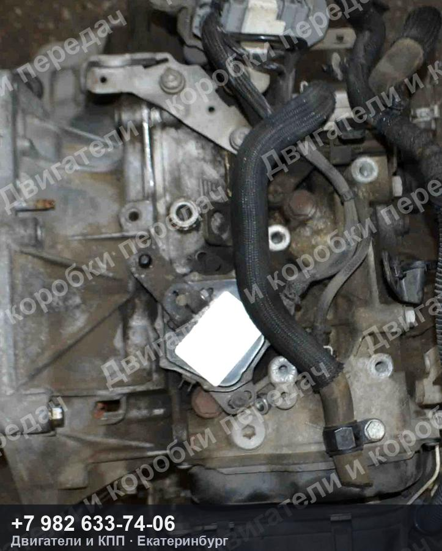
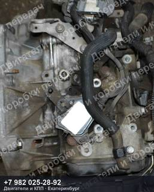
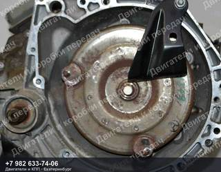
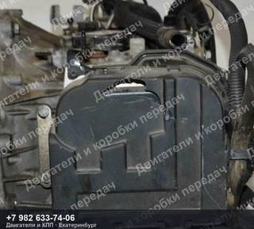
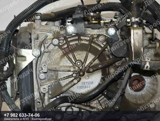
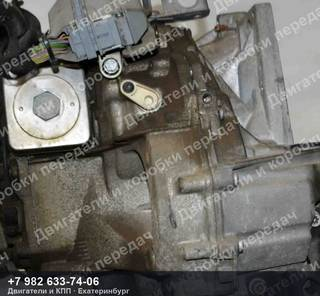
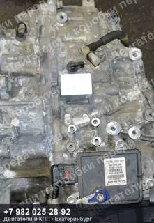
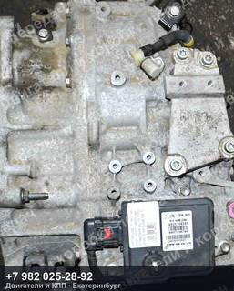
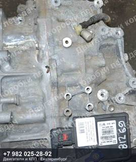
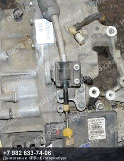

Контрактная АКПП Citroen/Peugeot C3/DS3/2008/207/208
Контрактная АКПП Citroen/Peugeot C3/DS3/2008/207/208 — двигатель 5F01/5FS/5FW/EP6, пробег 38 000 км.
| Марка | CITROEN/PEUGEOT |
| Модель | C3/DS3/2008/207/208 |
| Двигатель | 5F01/5FS/5FW/EP6 |
| Пробег | 38 000 км |
| Тип | Автомат |
| Номер детали | 38000km |
| OEM-номера | 223199, 2232L5, 9808549780 |
| Состояние | Б/у |
| Артикул | ДК-591422 |
Контрактная АКПП Citroen/Peugeot C3/DS3/2008/207/208 — что важно знать
Агрегат снят с автомобиля CITROEN/PEUGEOT C3/DS3/2008/207/208 пробег 38 000 км. Двигатель 5F01/5FS/5FW/EP6. Номер детали 38000km. Подходящие OEM-номера: 223199, 2232L5, 9808549780.
Перед отправкой агрегат проверяем и фотографируем. Пришлём фотографии и видео работы именно этого экземпляра, поможем проверить совместимость по VIN вашего автомобиля. Отправка из Екатеринбурге до транспортной компании — бесплатно, дальше — любой ТК до вашего города.
Не нашли свой контрактная АКПП Citroen/Peugeot C3/DS3/2008/207/208?
Пришлите VIN или марку с моделью — проверим по складу и подберём то, что точно встанет на вашу машину. Ответим и подскажем, даже если у нас этого нет.
Похожие агрегаты Citroen/Peugeot



